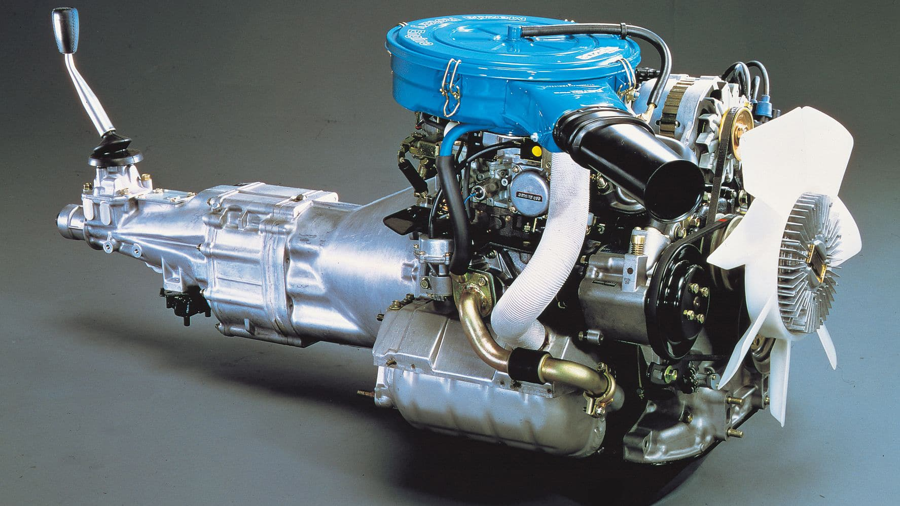
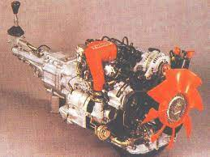

The Engine
The 12A
The first generation RX-7 (SA) came with a 12A engine
The Mazda 12A engine is a Wankel rotary engine produced from 1970 through 1985. The 12A is reduced in displacement the 10A engine (the first rotary engine in mass production). The engine had a two-rotor design also, the same rotor radius. The depth was increased by 10 mm (0.39 in) to 70 mm (2.8 in) which allowed getting larger 573 cc chambers and total displacement of 1146 cc (573x2).
The rotor housing was made of aluminum. The aluminum sides were coated with molten carbon steel. The Sheet-metal Insert Process (SIP) was used since 1974 for reinforcement of the rotor housing. The SIP is a sheet of steel with a chrome plated surface. The rotors were made of cast iron. Chrome-molybdenum steel was used for eccentric shafts. The rotors were equipped with aluminum/carbon apex seals
The 12A engine had the 6PI system featured by variable induction ports. This engine also had a cast-iron thermal reactor to reduce exhaust emissions as latest 0866 version of the 10A series. Some engines had an insert inside exhaust ports to reduce exhaust noise. The earlier 12A was a twin distributor rotary engine.
The ultimate 12A engine was the electronically fuel-injected engine used in the Japan-spec HB series Cosmo, Luce, and SA series RX-7. In 1982 a 12A turbo powered Cosmo coupe was officially the fastest production car in Japan. It featured "semi-direct injection" into both rotors at once. A passive knock sensor was used to eliminate knocking, and later models featured a specially-designed smaller and lighter "Impact Turbo" which was tweaked for the unique exhaust signature of the Wankel engine for a 5-horsepower increase. The engine continued until 1989 in the HB Cosmo series but by that stage it had grown a reputation as a thirsty engine.
